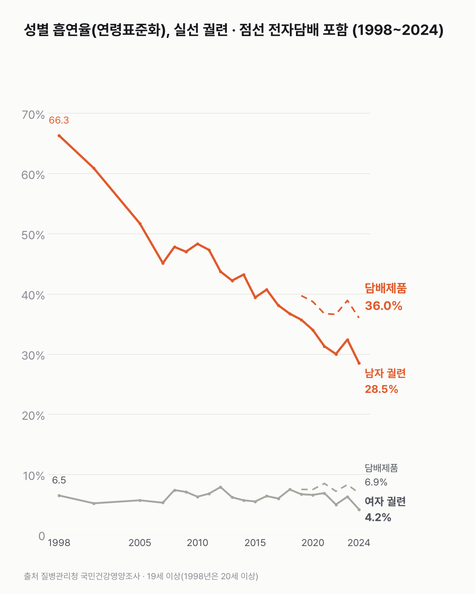
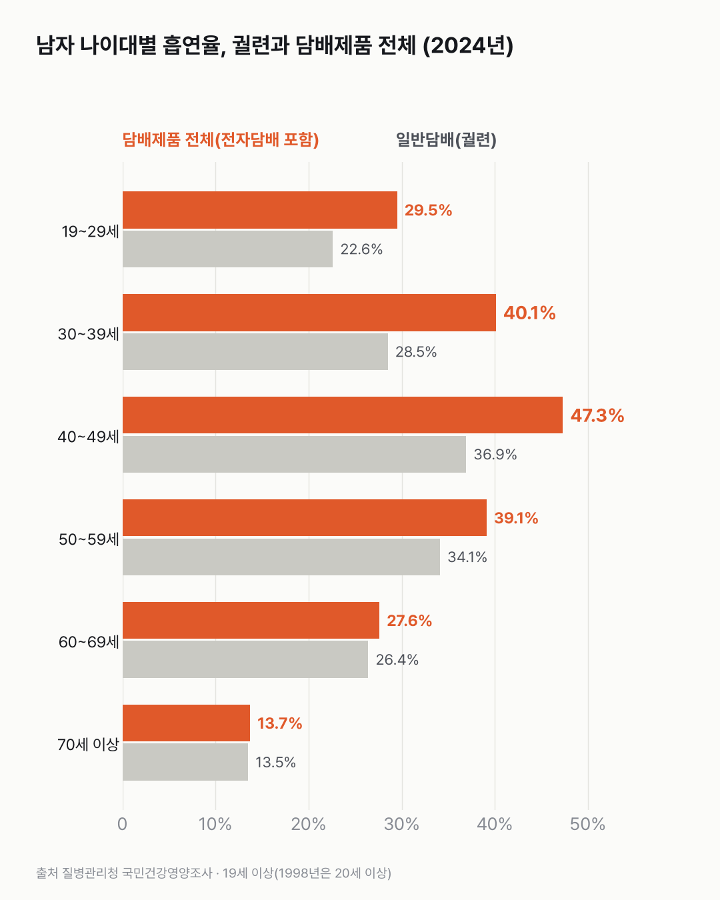

전자담배까지 세면, 남자 흡연은 덜 줄었어요
무엇을 세느냐에 따라 남자 흡연이 줄어든 크기가 달라요. 전자담배까지 세면 줄어든 폭이 훨씬 작아요.

- 2024년 일반 담배(궐련)를 피우는 남자는 28.5%예요. 1998년(66.3%)의 절반이 안 돼요.
- 전자담배까지 합치면 남자 36.0%, 여자 6.9%가 담배를 써요.
- 2019년부터 보면 남자 궐련은 35.7%에서 28.5%로 줄었는데, 전자담배까지 합친 값은 39.7%에서 36.0%로 덜 줄었어요.
흡연율에서 '피우는 사람'은 평생 일반 담배를 다섯 갑(100개비) 이상 피웠고, 지금도 피우는 사람이에요. 이 정의엔 전자담배가 들어가지 않아요. 그래서 궐련·전자담배 중 하나라도 지금 쓰는 '담배제품 사용률'을 따로 찾아봤어요.
일반 담배만 보면 2024년 남자는 28.5%예요. 1998년(66.3%, 20세 이상)의 절반 아래로 내려왔어요. 여자는 6.5%에서 4.2%가 됐어요.
담배제품 전체로 세면 남자 36.0%, 여자 6.9%예요. 궐련만 볼 때보다 남자는 7.5%p, 여자는 2.7%p 높아요. 2019년부터 비교하면 남자 궐련은 35.7%에서 28.5%로 줄었는데, 담배제품 전체는 39.7%에서 36.0%로 덜 줄었어요.
나이대로 보면 2024년 40대 남자는 47.3%가 담배제품을 써요. 궐련만 세면 36.9%예요. 궐련과 전체의 차이가 큰 나이대는 30대(궐련 28.5%, 전체 40.1%)와 40대예요. 30대 남자는 액상형 전자담배가 15.0%, 40대는 궐련형 전자담배가 17.7%예요.

40대 남자는 둘 중 한 명 가까이가 무엇이든 담배를 써요. 궐련과 전자담배를 같이 쓰는 사람이 얼마나 되는지는 이 표로 셀 수 없었어요.
이 숫자는 어디서 왔나요
출처
어떻게 셌나요
- 질병관리청 「국민건강영양조사」예요. 표본을 뽑아 조사한 값이에요.
- 현재흡연율은 평생 일반담배를 5갑(100개비) 이상 피웠고 지금도 피우는 사람의 비율이에요. 19세 이상이 대상이에요(1998년은 20세 이상).
- 담배제품 사용률은 궐련·궐련형 전자담배·니코틴 액상형 전자담배·기타 가운데 하나라도 지금 쓰는 사람의 비율이에요.
- 추이(차트 1)는 2005년 인구 구성으로 맞춘 연령표준화 값이에요. 나이 구성이 바뀐 영향을 빼고 해마다 비교하려는 거예요. 나이대별(차트 2)은 표준화하지 않은 값이에요.
- 표본조사라 표준오차(표본이라 생기는 오차의 크기)가 1%p 남짓 있어요. 한 해 변화(예: 2023 → 2024)는 해석하지 않았어요.
한계 3가지
이 데이터로 말할 수 없는 것
- 표본조사라 작은 차이는 우연일 수 있어요.
- 원인(담뱃값 인상·금연 정책 등)은 이 데이터로 알 수 없어요. 음주는 음주 글에서 다뤘어요.
- 지역별 차이는 다루지 않아요.
새 글 나오면 받아 보기
피드 리더 앱에 이 사이트 주소를 한 번 넣어 두면, 새 글이 올라올 때 앱에 떠요. 가입이나 메일 주소는 필요 없어요.
받는 법 보기
- 피드 리더 앱을 하나 골라요. 새 글을 모아 보여 주는 앱이에요. 예를 들면 Feedly나 Inoreader가 있어요. 둘 다 무료고 웹·휴대폰에서 써요.
- 앱에서 '구독 추가'(+)를 누르고 아래 주소를 붙여 넣어요.
- 끝이에요. 새 글이 올라오면 앱 목록에 떠요.
https://protofu.github.io/opendata-insight/feed.xmlFeedly를 쓴다면 여기를 눌러 바로 추가할 수도 있어요.